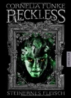

Bookpedia : Bibliothek : Autor : F


| # | Autor | Serie | Titel | Format | Seiten | Erscheinungsdatum | Verlag | Genre |
|---|---|---|---|---|---|---|---|---|
| 65 | Sam Feuerbach | Die Gaukler-Chroniken, Gesamtausgabe im Schuber | Taschenbuch | 1200 | Dez. 2020 | bene Bücher | Fantasy | |

Die Gaukler-Chroniken, Gesamtausgabe im Schuber Sam Feuerbach |
||||||||
| 66 | Alice Finch | Lego Architecture Ideas Book, The | Hardcover | 200 | Aug. 2018 | No Starch Press | Arts & Photography | |
| 67 | Gustave Flaubert | Drei Erzählungen | Taschenbuch | 189 | Dez. 1994 | Reclam, Ditzingen | Romane & Erzählungen | |
| 68 | Theodor Fontane | Irrungen Wirrungen | Taschenbuch | 184 | Jan. 2005 | Reclam, Ditzingen | Romane & Erzählungen | |
Irrungen Wirrungen Theodor FontaneWertung: 4.0 (21 Stimmen) Hinzugefügt am: 03.12.2008 Zusammenfassung: In diesem Roman, der 1887 erschienen ist, wird erstmals das im Werk Fontanes bevorzugte Adelsmilieu mit dem der Unterschicht in Form einer unstandesgemäßen Liebe verknüpft. Die Plätterin Lene Nimpsch, die mit ihrer alten Mutter in einem kleinen Häuschen auf dem Gelände einer Gärtnerei bei Wilmersdorf wohnt, verlebt einen Sommer der Liebe mit dem jungen Baron Botho von Rienecken. Dieser liebt Lene ebenfalls aufrichtig und zieht das natürliche Leben ihres einfachen häuslichen Umkreises seiner Gesellschaftssphäre vor. Dennoch sind sich die beiden Liebenden darüber im Klaren, dass ihrem Verhältnis aufgrund der Standesunterschiede keine Dauer beschieden sein kann. Dies wird besonders anlässliche einer Landpartie nach "Hankels Ablage" an der Spree deutlich, auf der ihre Beziehung auch schon den Beginn ihres Endes erlebt. In der Gestalt von drei Kameraden Bothos und deren standesgemäßen Begleiterinnen erscheint die "Gesellschaft" in der Idylle der beiden Liebenden und zeigt diesen einmal mehr, dass es keine Möglichkeit der Flucht aus Zwang und Norm gibt. Botho fügt sich alsbald in die unabänderlichen Gegebenheiten und heiratet seine oberflächliche Kusine Käthe. Auch Lene akzeptiert schließlich voller Schmerz die Trennung und wird später die Ehefrau des menschlich integren Gideon Franke. Der vorliegende Roman ist ein typischer Vertreter des literarischen Realismus, der es sich etwa um die Mitte des 19. Jh. zur Aufgabe gemacht hatte, die vorherrschenden gesellschaftlichen Verhältnisse zum zentralen Thema seiner Darstellungen zu machen. In Fontanes Roman wird diese gesellschaftliche Realität im Kleinformat, nämlich als Liebesbeziehung geschildert. Die Liebe, eigentlich das Hauptmerkmal für Menschlichkeit, der beiden Hauptfiguren zueinander ist durch die Konventionen der Gesellschaft und die Intrigen ihrer Mitmenschen zum Scheitern verurteilt. Nicht einmal die Möglichkeit einer Flucht wird erwogen; Botho und Lene handeln absolut systemkonform, indem sie sich den äußeren Gegebenheiten widerstandslos fügen. Es ist nicht verwunderlich, dass der Großteil des Lesepublikums auf das Erscheinen dieses Romans mit Empörung reagierte, da er dessen Lebenslüge, nämlich den Verzicht auf individuelles Glück als Preis für das Weiterleben im Ordnungsgefüge der Gesellschaft bloßgelegt hatte. Die überladenen, sehr detailierten Darstellungen der trivialsten Situationen und Gegenstände, die für den eigentliche Handlungsverlauf irrelevant sind, sind zwar typisch für Fontane und den gesamten Realismus, dürften wohl aber nicht der GEschmack jener Leute sein, die gerne schnell 'zur Sache' kommen wollen. Nichtsdestotrotz ist der Roman für Literaturbegeisterte eine durchaus empfehlenswerte Lektüre.
Themen
19th century fiction, Deutsche Belletristik, Roman, Erzählung, TB/Belletristik/Hauptwerk vor 1945, Belletristik, Erzählungen, Romane, Fiction, General |
||||||||
| 69 | Sebastian Frenzel, Simon Zimpfer | Escape Adventures | Von Königen und Alchemisten | Taschenbuch | 47 | Sept. 2018 | Topp | Spiel & Spaß |
Von Königen und Alchemisten Sebastian Frenzel, Simon ZimpferSerie: Escape Adventures Hinzugefügt am: 04.11.2018 Zusammenfassung:
Themen
|
||||||||
| 70 | Cornelia Funke | Reckless: Steinernes Fleisch | Gebundene Ausgabe | 346 | Sept. 2010 | Dressler | Nach Alter | |
Reckless: Steinernes Fleisch Cornelia Funke

ISBN: 9783791504858 ListPrice: EUR 19,95 Illustrator: Cornelia Funke Maße: 1.57 x 8.43 x 6.38 in Hinzugefügt am: 27.11.2010 Zusammenfassung: Jahrelang ist es Jacob Reckless gelungen, im Zimmer seines verschwundenen Vaters unbeobachtet die Hand auf den Spiegel zu legen und so ins märchenhafte Reich dahinter zu gelangen. Dort hat er als erfolgreicher Schatzjäger unter anderem im Dienst der Kaiserin gearbeitet, ist dem Schuh von Aschenputtel ebenso hinterher gejagt wie dem Tischlein deck dich, dem Knüppel aus dem Sack oder dem Goldenen Ball, der jeden in sich hineinzuziehen vermag, der ihn berührt. Und er hat erfahren, dass sein Vater mit seinen Erfindungen den grausamen Goyls bei ihrem Kampf gegen die Menschen geholfen hat: jenen seelenlosen Wesen also, deren Haut (und Herz) aus Stein besteht.
Themen
|
||||||||
| 71 | Cornelia Funke | Tintenwelt | 1 - Tintenherz | Gebundene Ausgabe | 573 | Aug. 2003 | Dressler | Überblick |

1 - Tintenherz Cornelia FunkeSerie: Tintenwelt Wertung: 4.0 (532 Stimmen) Hinzugefügt am: 06.12.2009 Zusammenfassung: Meggie lebt mit ihrem Vater Mo, einem "Bücherarzt", in einem alten Haus. Da steht eines Nachts ein merkwürdiger Mann vor der Tür. Er warnt Mo vor jemandem namens Capricorn. Bei Nacht und Nebel fliehen die drei, und nach und nach findet Meggie heraus, dass ihr Vater allerlei Geheimnisse vor ihr verbirgt. Wieso hat er sich zum Beispiel immer geweigert, ihr vorzulesen? Und was ist mit Meggies Mutter wirklich geschehen, die vor vielen Jahren verschwand?
Themen
Modern fiction, Ab 10 Jahre, Deutsche Belletristik, Jugendliteratur, Junge Erwachsene, Kinder- u. Jugendliteratur, Kinderliteratur, German, Hardcover, Softcover / Kinder- und Jugendbücher/Jugendbücher ab 12 Jahre, Jugendromane u. -erzählungen, Kinder-, Kinder- / Jugendromane u. -erzählungen, Fiction / General, Phantastisches, Utopie, Der silberne Griffel (Jugendbuchpreis), Die besten 7 Bücher für junge Leser, Die schönsten deutschen Bücher, Stift. Buchkunst, Kinderbuch/Jugendbuch, Kalbacher Klapperschlange (Kinderbuchpreis), Kinder- und Jugendbuchliste SR, WDR, Radio Bremen, Phantastik-Preis der Stadt Wetzlar, Fantasy, General & Literary Fiction |
||||||||
| 72 | Cornelia Funke | Tintenwelt | 2 - Tintenblut | Gebundene Ausgabe | 707 | Sept. 2005 | Dressler | Überblick |
2 - Tintenblut Cornelia FunkeSerie: Tintenwelt Wertung: 4.5 (197 Stimmen) Hinzugefügt am: 30.12.2009 Zusammenfassung: Endlich geht sie weiter, die Geschichte um "Tintenherz" -- das Buch, das Meggies Leben für immer verändert hat. Im ersten Band wurden einige Figuren aus "Tintenherz" in die reale Welt “hineingelesen”. Und es kostete viel Mühe und einige Opfer, die Bedrohung durch den Bösewicht Capricorn abzuwenden. "Tintenblut" nun beginnt mit einer der berührendsten und tragischsten Figuren aus "Tintenherz": Staubfinger. Nach Jahren der Sehnsucht nach seiner Tintenwelt hat er endlich jemanden gefunden, der ihn zurücklesen kann. Doch dieser Mann, der sich Orpheus nennt, ist mit dem Schurken Basta im Bunde. Und so gelangt Staubfinger zwar zurück in die Tintenwelt -- aber sein treuer Begleiter Farid nicht. Farid weiß, dass in der Tintenwelt der Tod auf Staubfinger wartet. Und so geht er zu Meggie und bittet sie, ihn ebenfalls in die Tintenwelt zu lesen. Meggie lässt sich überreden, aber sie besteht darauf, mitzukommen. Obwohl sie weiß, dass sie sich damit auf ein ungewisses Schicksal einlässt -- und ihren Eltern das Herz bricht.
Themen
Children's & young adult fiction & true stories, Ab 10 Jahre, Deutsche Belletristik, Jugendliteratur, Junge Erwachsene, Kinder- u. Jugendliteratur, Kinderliteratur, Hardcover, Softcover / Kinder- und Jugendbücher/Jugendbücher ab 12 Jahre, Jugendromane u. -erzählungen, Kinder-, Kinder- / Jugendromane u. -erzählungen, Juvenile Fiction / General, Abenteuer, Phantastisches, Utopie, Deutsche Literatur, Kinder- u. Jugendbücher, Children's Books, Young Adult Fiction |
||||||||
| 73 | Cornelia Funke | Tintenwelt | 3 - Tintentod | Gebundene Ausgabe | 768 | Sept. 2007 | Dressler | Überblick |
3 - Tintentod Cornelia FunkeSerie: Tintenwelt Wertung: 4.0 (117 Stimmen) Hinzugefügt am: 30.12.2009 Zusammenfassung: Mit einem fantastischen Paukenschlag beschließt Cornelia Funke die "Tintenwelt"-Trilogie - ein grandioser Schlusspunkt der Abenteuer von Mo, Resa, Meggie und den zahllosen Fabelwesen. Die bekennende Büchersüchtige Cornelia Funke wird auch mit diesem Band Leseratten, Bibliophile, kleine und große Abenteurer fesseln.
Themen
Ab 10 Jahre, Deutsche Belletristik, Kinder- u. Jugendliteratur, Kinderliteratur, HC/Kinder- und Jugendbücher/Jugendbücher ab 12 Jahre, Jugendromane u. -erzählungen, Kinder-, Kinder- / Jugendromane u. -erzählungen, Abenteuer |
||||||||

 Updated: 27.12.2022 | Total number of titles: 201 | Page: 5 of 17
Updated: 27.12.2022 | Total number of titles: 201 | Page: 5 of 17